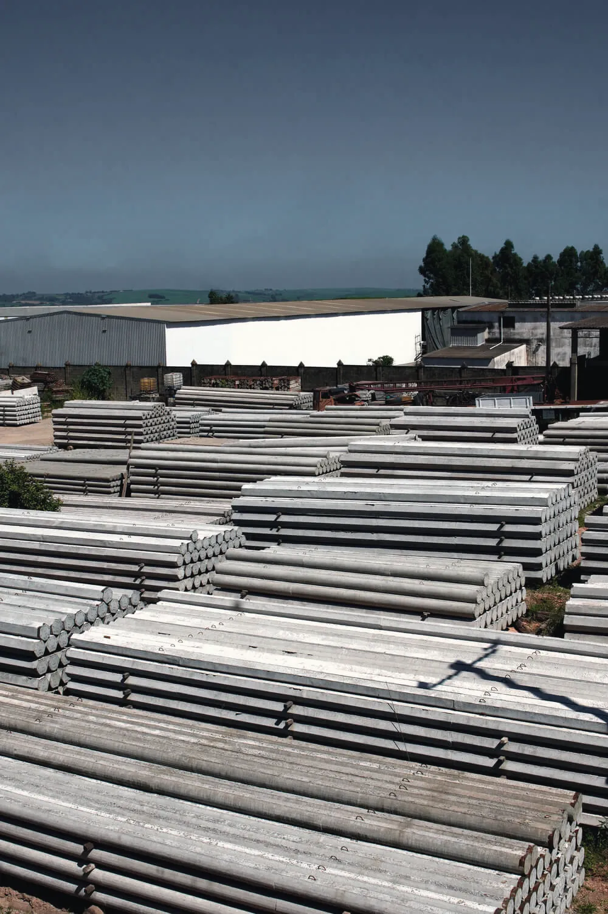

A estaca sai do pátio e encontra o solo.
Peças curadas e inspecionadas sobem na carreta da frota própria e chegam ao canteiro prontas. Lá, a fundação deixa de ser concretagem e vira montagem técnica, verificada golpe a golpe.

A complexidade fica na fábrica. A obra vira montagem.
Diferente das estacas moldadas no solo, o método pré-fabricado leva a parte difícil para dentro da fábrica e entrega um produto com características mecânicas conhecidas antes do primeiro golpe.
Na IPR, o canteiro recebe peças prontas: sem espera de cura, sem concretagem enterrada e sem as variáveis de umidade e contaminação do solo.


Pré-fabricada × moldada in loco.
Onde o controle industrial faz diferença na qualidade, no prazo e no canteiro.
Frota própria do pátio ao canteiro.
A fundação é o caminho crítico de qualquer obra. Por isso a logística é da própria IPR.
- Transporte diretoVeículos próprios dão flexibilidade de prazo e agilidade no atendimento à obra.
- Manuseio de precisãoEquipes treinadas para o içamento e o descarregamento preservam a integridade das peças.


Limpeza, previsibilidade, carga verificada.
O acompanhamento contínuo durante a cravação mostra a capacidade de carga em tempo real, com transparência total para o engenheiro responsável.
Canteiro limpo
Método de deslocamento: sem lama, sem retirada de terra e sem sobra de concreto.
Carga verificada
Nega e repique elástico medidos estaca a estaca e confrontados com o projeto.
Cronograma curto
Peças prontas e curadas: a obra não espera o concreto ganhar resistência.
Rastreabilidade
Cada estaca ligada aos ensaios do seu lote de concreto.